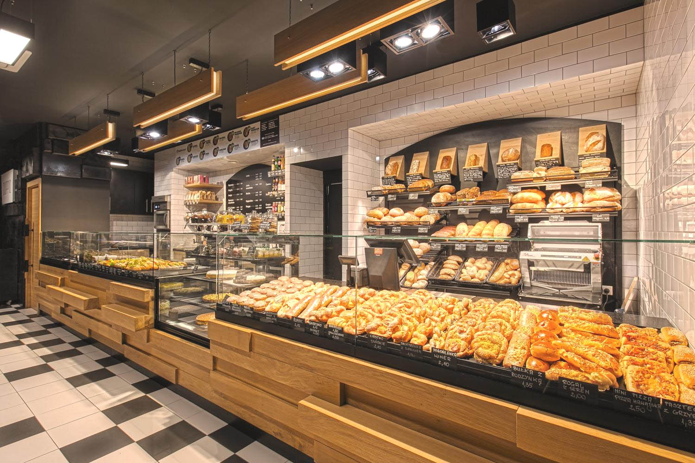
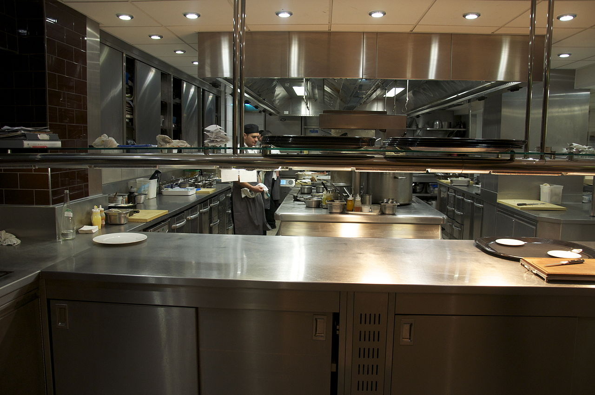
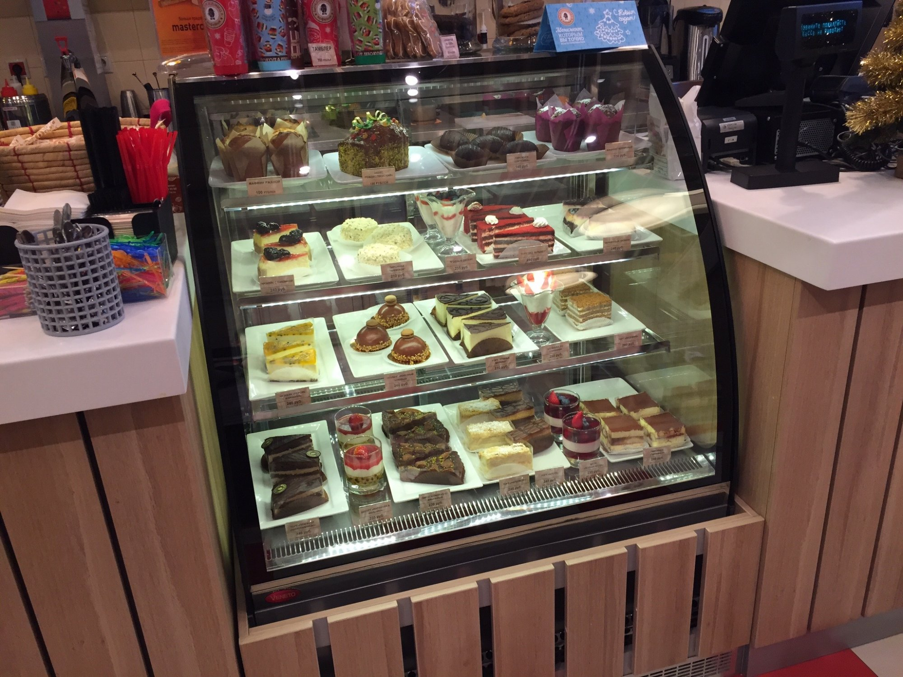
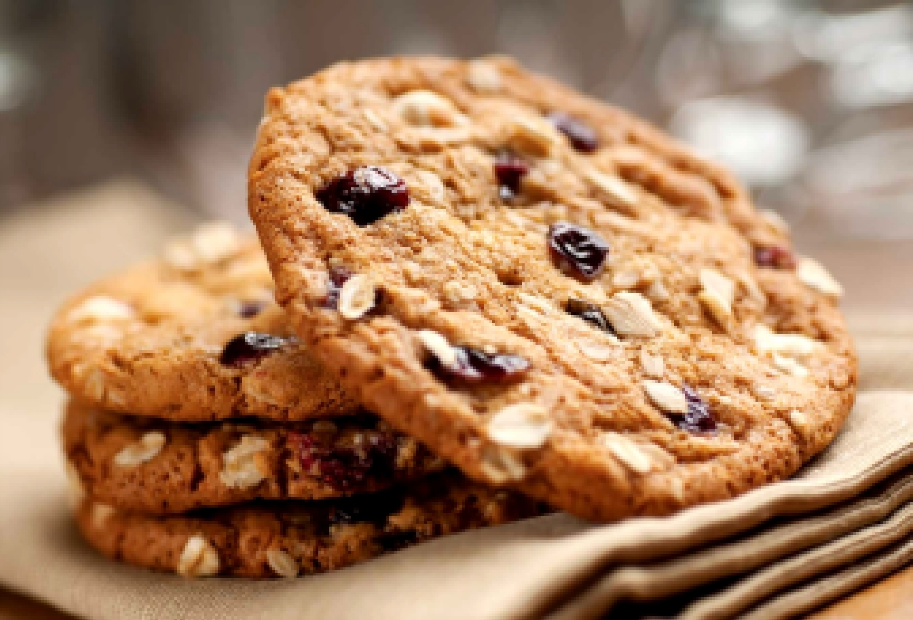
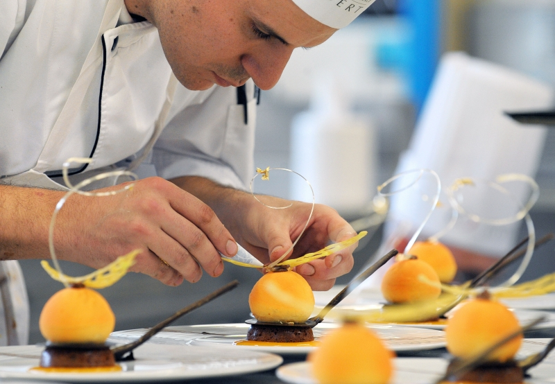

О нас
Пекарня была основана с философией 5-звездочного качества по доступным ценам
Как все начиналось и продолжалось?
«Pekar-Beckar» - передовой белорусский производитель хлебобулочных и кондитерских изделий. С 1999 года мы печем хлеб и пирожные для людей с разными вкусами, но одинаково серьезными требованиями к качеству.
Мы владеем собственной сетью пекарен-кондитерских и Бекарь-мобилями, осуществляем оптовые поставки в крупные розничные сети и международные сети отелей.
- 
- 
- 
Ежедневно «Pekar-Beckar» производит и реализует 3 тонны вкуснейшей выпечки: разнообразные хлеба, багеты, булочки, сдобу, слойки, пирожные и торты. Производственный комплекс «Pekar-Beckar» является одним из лучших в Восточной Европе и не имеет
аналогов в Минске.
В «Pekar-Beckar» сознательно отказываются от пищевых улучшителей в пользу натуральных био-заквасок. Здесь используют ингредиенты высокого качества от проверенных производителей, фильтрованную воду и экологичную упаковку.
- 
- 
Неспроста лучшие пекари и кондитеры – выходцы из Франции, ведь они впитывают эту культуру с молоком матери. Именно поэтому выбор шеф-пекаря — француза был очевиден.
Жан-Фреассо - один из самых ярчайших представителей старой школы с 30 годами стажа за плечами кондитерского искусства Франции.
Основное отличие в том, что у французского хлеба всегда хрустящая корочка, мякоть не очень белая, воздушная, и слегка кисловатый вкус. Хлеб в Беларуси мягче, нежнее, белее, менее пористый и вкус совсем другой, более ровный.
Главная причина таких различий - мука. И чтобы в минской пекарне «Pekar-Beckar» делать продукцию, соответствующую по качеству той, которая продается во Франции, мы используем только французскую муку, закваску и некоторые другие ингредиенты. Но все основные
процессы - замес теста, выпечка - происходят уже здесь.
Французский хлеб - очень качественный продукт. Из всех видов потребляемого хлеба каждый третий - багет. Специальные учреждения постоянно отслеживают состав, жирность, калорийность хлеба. На каждом этапе выпечки хлеба или кондитерских
изделий все жестко контролируется. Пошаговое, точное следование технологии позволяет нашим пекарям достигать высокого качества продукта. Ведь значение имеет не только мука, но и температура воды, температура в печи, влажность воздуха.
- 1Нам привозят муку из Франции;
- 2Мы используем свежие продукты;
- 3Все наши кондитеры высочайшего класса;
- 10Вы получете удовольствие вкуса от наших изделий.
Багеты и другой хлеб, которые продаются в супермаркетах, изготавливаются фабричным способом.При этом зачастую используют замороженное тесто, поэтому корочка может легко отделяться от мякиша. Фабричные изделия, конечно, дольше хранятся, но если вы хотите попробовать настоящий французский хлеб - лучше покупать его у нас.
Жан-Фреассо
Кондитер, шеф-повар, чемпион кондитерского искусства (Франиция)Основное отличие в том, что у французского хлеба всегда хрустящая корочка, мякоть не очень белая, воздушная, и слегка кисловатый вкус. Хлеб в Беларуси мягче, нежнее, белее, менее пористый и вкус совсем другой, более ровный.
Мы так же любим экспериментировать и пробовать что-нибудь новое. В последние несколько лет кондитеры при изготовлении пирожных все чаще добавляют в них цветы. Например, розу, фиалку. Разумеется, используются только те цветы, которые можно употреблять
в пищу без вреда для здоровья.
Их могут перетирать и класть сразу в тесто или же помещать на пирожное целиком. Например, попробуйте отыскать и попробовать шоколадное пирожное со вкусом розовых лепестков.
В конце хотелось бы сказать, что мы рады каждому посетителю и хотим, чтобы 5-звездочное качество кондитерских изделий было доступно любому.